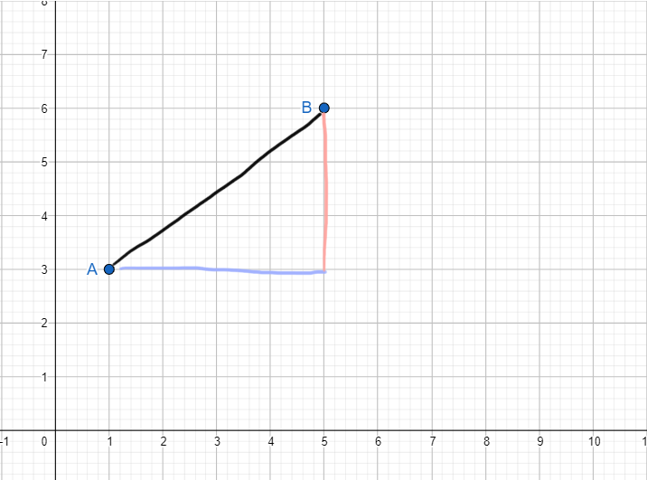
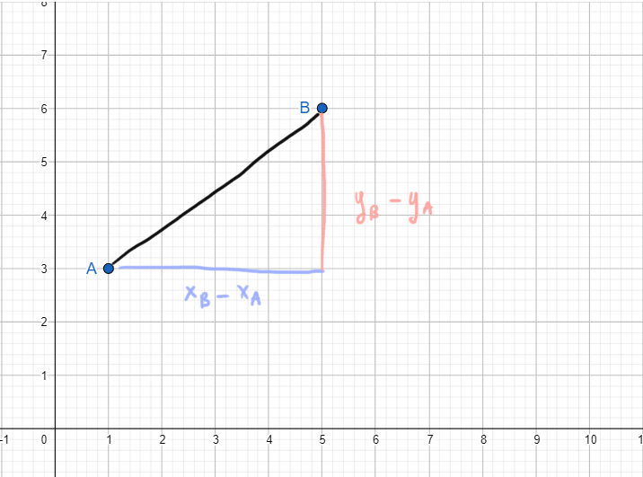

Dato un triangolo rettangolo vale la seguente uguaglianza:
\[
\text{ipotenusa}^2 = \left(\text{cateto}_{1}\right)^2 \,+\, \left(\text{cateto}_{2}\right)^2
\]
Il teorema di Pitagora stabilisce la relazione che intercorre tra i tre lati di un triangolo rettangolo.
Quindi possiamo usarlo per trovare un lato del triangolo se sappiamo gli altri due usando le due formule inverse.
La prima permette di trovare l'ipotenusa a partire dai due cateti:
Esistono tonnellate di dimostrazioni del teorema di Pitagora.
Di seguito potete vederne una particolarmente carina.
2
Distanza tra due punti
Ritorniamo al nostro problema iniziale:
Abbiamo i punti \(A\left(1; 3\right)\) e \(B\left(5; 6\right)\) e vogliamo trovare
la misura della loro distanza.

Disegnamo questo triangolo rettangolo, in modo da poter sfruttare il teorema di Pitagora.
La misura del cateto blu è la differenza tra \(x_B\) ed \(x_A\)
La misura del cateto blu è la differenza tra \(y_B\) ed \(y_A\)

Abbiamo trovato la misura di entrambi i cateti rispetto alle coordinate di \(A\) e \(B\).
Usiamo il teorema di Pitagora per trovare l'ipotenusa del triangolo, che è la distanza tra \(A\) e \(B\)
\[
\text{ipotenusa} = \sqrt{\left(\text{cateto}_{1}\right)^2 \,+\, \left(\text{cateto}_{2}\right)^2}
\]
Quindi
\[
AB = \sqrt{\left(x_B-x_A\right)^2 \,+\, \left(y_B-y_A\right)^2}
\]
Riassumendo:
Formula della distanza tra due punti
Dati i punti
\[A\left(x_A\,\,\,; y_A\right) \qquad B\left(x_B\,\,\,; y_B\right)\]
la distanza tra \(A\) e \(B\) è
\[
AB = \sqrt{\left(x_B-x_A\right)^2 \,+\, \left(y_B-y_A\right)^2}
\]
.png)